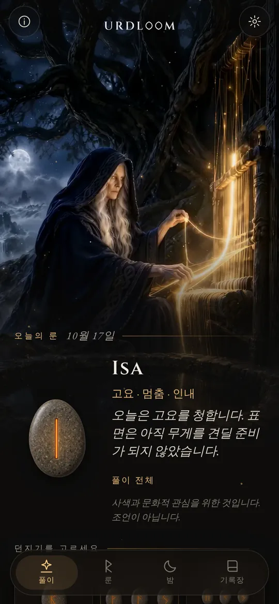
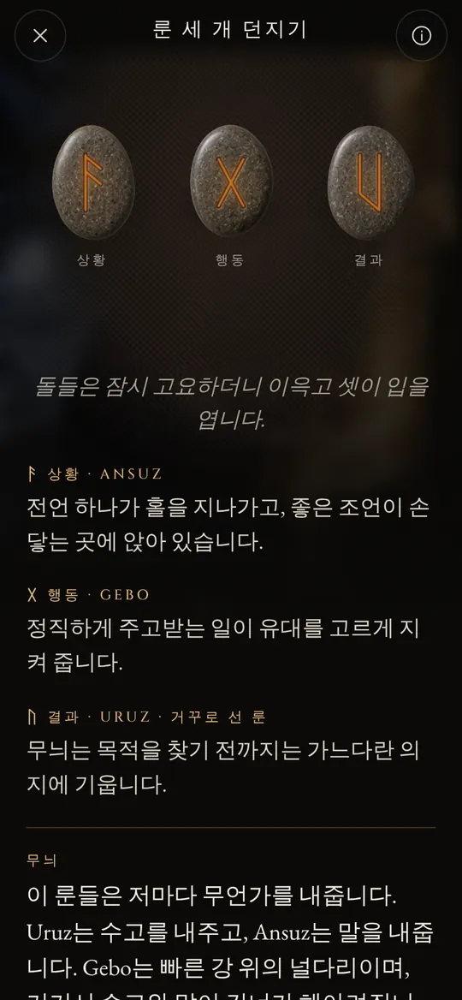
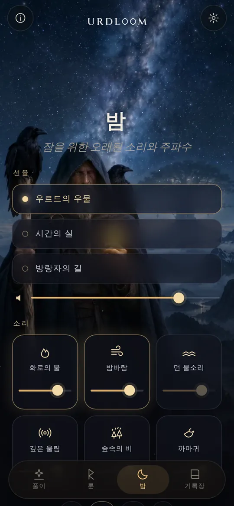
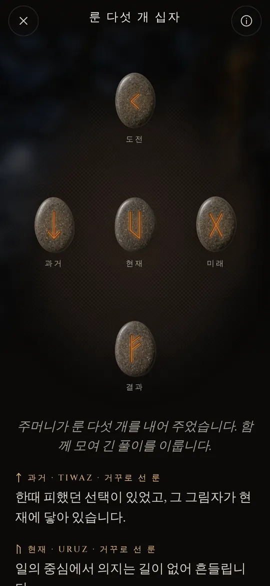

우물가에 앉은 세 여인
옛 북유럽 시에서 세 노른은 세계수 위그드라실 아래의 우물가에 앉아 있습니다. 그들은 나무뿌리에 물을 주고, 나뭇조각에 표식을 새기며, 태어나는 모든 이의 삶을 정합니다. 가장 맏이는 우르드입니다. 그 이름은 이미 일어난 일을 뜻하며, 우물도 그녀의 이름을 따서 불립니다.
Urdloom이라는 이름은 그녀에게서, 그리고 운명을 짠다고 전해지는 베틀에서 왔습니다. 앱은 그 분위기를 그대로 지킵니다. 손에는 돌이 든 주머니가, 바닥에는 천이 있고, 풀이는 별자리 운세가 아닌 사가의 목소리로 쓰여 있습니다.

그곳에서 오는 처녀들, 많은 것을 아는 이들, 나무 아래 호수에서 나온 셋.『뵐루스파』 20연
쥐고, 흔들고, 놓으세요
주머니를 쥐면 손안에서 돌들이 달그락거립니다. 손을 놓으면 돌들이 천 위로 날아가 구르고, 멈추고, 하나씩 뒤집힙니다. 그 아래에 풀이가 나타납니다.

룬 하나
앞에 놓인 하루를 위한 돌 하나, 혹은 예 또는 아니오로 답할 수 있는 질문을 위한 돌 하나입니다. 탭하면 던져집니다.


룬 세 개 던지기
상황, 행동, 결과. 짧은 사가처럼 왼쪽에서 오른쪽으로 읽은 뒤, 하나로 이어 읽습니다. 마지막의 실이 세 룬이 서로 어떻게 이야기를 나누는지 보여 줍니다.

룬 다섯 개 십자
가운데 줄에는 과거, 현재, 미래가, 위에는 도전이, 아래에는 결과가 놓이고, 그 한가운데에 당신이 있습니다.




모든 풀이는 손으로 쓰였습니다. 스물네 개의 룬, 모든 두 룬의 짝, 그리고 세 룬으로 이루어진 2,024가지 조합 전부를 스물두 개 언어 하나하나로 썼습니다. 기다리는 동안 무언가가 생성되는 일은 없습니다.

스물네 개의 룬
엘더 푸사르크는 가장 오래된 룬 문자로, 대략 2세기부터 8세기까지 새겨졌습니다. 스물네 개의 기호는 여덟 개씩 세 가족으로 나뉘며, 이를 에트라고 부릅니다. 각 에트에는 맨 앞에 선 룬의 신 이름이 붙어 있습니다. 돌을 만지면 그 룬을 읽을 수 있습니다.
프레이의 에트
하갈의 에트
티르의 에트
룬의 이름은 모든 언어에서 옛 형태 그대로 둡니다. 그것은 기호 자체의 이름이며, 학자들이 룬 시와 가장 오래된 문자 체계에서 재구성한 것입니다.
룬의 짧은 역사
룬은 무엇보다 먼저 문자입니다. 게르만 사람들은 천오백 년 가까이 나무와 뼈, 금속과 돌에 룬을 새겼습니다. 기호들과 제비를 던지던 옛 풍습은 이렇게 우리에게 전해졌습니다.

흰 천 위의 제비
로마의 역사가 타키투스는 게르만 사람들이 열매 맺는 나무의 가지를 잘라 조각을 내고, 그 위에 표식을 새겨 흰 천 위에 흩뿌린다고 적었습니다. 사제나 집안의 가장이 하나씩 세 조각을 집어 들고 그것을 읽습니다. 그는 그 표식이 룬이었다고 말하지 않지만, 그 몸짓이야말로 Urdloom이 이어 가는 것입니다.
최초의 새김글
덴마크 비모세 늪에서 발견된 뼈 빗에는 알려진 가장 오래된 룬 새김글 가운데 하나가 있습니다. 단 한 단어, harja입니다. 같은 시대의 창촉과 브로치, 부적들은 이 문자가 이미 북방 곳곳에 퍼져 있었음을 보여 줍니다.
돌 하나에 새긴 온전한 줄
고틀란드의 퀼베르 돌에 누군가 스물네 개의 기호를 모두 순서대로 새겼습니다. 오늘날 남아 있는 가장 오래된 완전한 푸사르크입니다. 이 줄의 이름은 첫 여섯 글자 f, u, th, a, r, k에서 왔습니다.
황금 뿔
덴마크 갈레후스의 두 황금 뿔 가운데 하나에는 두운을 맞춘 시 한 줄이 새겨져 있습니다. “나, 홀트의 아들 흘레바가스티즈가 이 뿔을 만들었노라.” 이는 게르만 언어로 쓰인 가장 이른 시구 가운데 하나입니다.
바이킹 시대의 열여섯 기호
스칸디나비아에서 문자는 열여섯 기호로 줄어들어 신 푸사르크가 됩니다. 그 글자로 수천 개의 기념비가 세워지며, 덴마크 옐링의 커다란 돌들도 그중에 있습니다.
글로 남겨진 시
아이슬란드의 필경사들이 에다의 시를 기록합니다. 『뵐루스파』에서 노른들은 우르드의 우물가에 앉아 있고, 『하바마울』에서 오딘은 바람 몰아치는 나무에 아홉 밤을 매달려 있다가 외침과 함께 룬을 집어 듭니다.
룬마다 한 편의 시구
노르웨이와 아이슬란드의 룬 시는 더 오래된 앵글로색슨의 룬 시와 함께 룬마다 짧은 시구를 붙입니다. 가축은 친족 사이에 다툼을 부르고, 우박은 가장 차가운 곡식이며, 얼음은 몹시 미끄럽습니다. 룬의 뜻에 관해 알려진 것의 상당 부분은 이 시구들에서 나옵니다.
다시 읽기
성찰을 위해 룬을 쓰는 것은 그 시들과 에다의 이미지 위에 세워진 현대의 부흥입니다. Urdloom은 그 전통 안에 숨김없이 서 있습니다. 고대의 신탁이라 내세우지 않고, 옛 기호를 정성껏 읽을 뿐입니다.

잠을 위한 오래된 소리와 주파수
하루가 저물면 방랑자는 별 아래로 나옵니다. 선율을 고르고, 그 위에 소리를 겹치고, 타이머를 맞추세요. 화면이 꺼져도 소리는 계속 흐르다가 저절로 잦아듭니다.
세 가지 선율인 우르드의 우물, 시간의 실, 방랑자의 길은 목노래와 프레임 드럼, 활로 켜는 타겔하르파 위에 지어졌습니다.
각각 음량을 따로 맞출 수 있는 여섯 겹의 소리를 섞어 보세요. 화로의 불, 밤바람, 먼 물소리, 깊은 울림, 숲속의 비, 까마귀입니다.
모든 소리는 Urdloom을 위해 만들었습니다. 인터넷에서 재생되는 것은 하나도 없습니다.
작지만 소중한 것들
- 아침마다 룬 하나
- 첫 화면에서 돌 하나가 엎어진 채 기다립니다. 원한다면 아침마다 짧은 알림이 당신을 위해 뽑힌 룬을 알려 줍니다.
- 기록장
- 마음에 닿는 풀이를 당신이 던진 질문과 함께 보관하세요.
- 나눌 수 있는 풀이
- 풀이를 그림으로 보내세요. 떨어진 그대로의 돌과 그 아래의 말이 함께 갑니다.
- 스물두 개 언어
- 각 언어는 그 언어를 읽는 사람들이 쓰고 검토했으며, 서체와 크기도 바꿀 수 있습니다.
여기서 일어난 일은 여기에 남습니다
Urdloom은 인터넷 없이 작동합니다. 계정도, 가입도, 광고도 없으며 어떤 종류의 분석이나 추적 기능도 들어 있지 않습니다. 당신의 질문과 풀이, 기록장은 당신의 휴대폰에 남습니다.
개인정보자주 묻는 질문
Urdloom은 미래를 알려 주나요?
아닙니다. 풀이는 성찰과 문화적 관심을 위한 것입니다. 옛 룬이 그랬듯 풀이는 가리킬 뿐이며, 그 뜻은 당신 자신의 삶 속에서 모양을 갖춥니다. 앱의 어떤 내용도 의료, 재정, 법률 또는 그 밖의 전문적인 조언이 아닙니다.
왜 말이 예스러운가요?
룬은 시와 사가와 수수께끼의 세계에서 왔습니다. 저희는 풀이를 일부러 그 목소리로 썼고, 모든 언어에서 룬의 전통에 최대한 가깝게 지켰습니다.
인터넷 연결이 필요한가요?
아닙니다. 풀이부터 밤의 소리까지 모든 것이 앱 안에 있습니다.
어떤 언어가 있나요?
영어, 튀르키예어, 독일어, 프랑스어, 스페인어, 이탈리아어, 포르투갈어, 러시아어, 우크라이나어, 폴란드어, 네덜란드어, 스웨덴어, 노르웨이어, 핀란드어, 그리스어, 아랍어, 힌디어, 인도네시아어, 일본어, 한국어, 중국어, 알바니아어입니다.